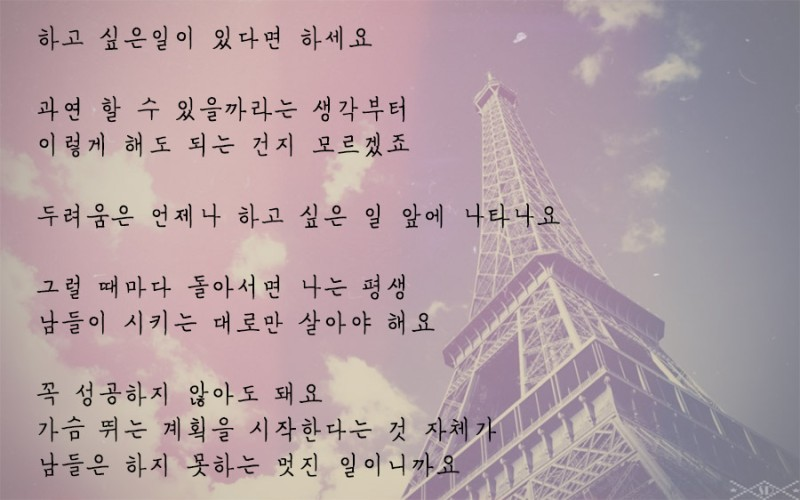
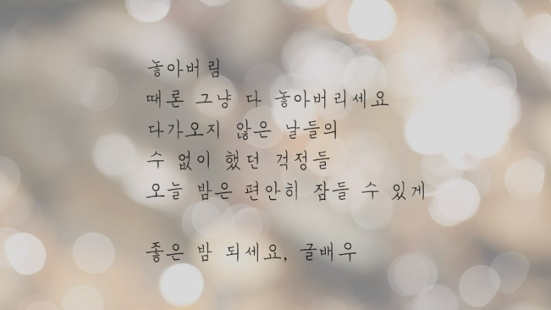

위로가 되는 말 모음
출처 : 네이버블로그

- 하고 싶은일이 있다면 하세요
- 과연 할 수 있을까라는 생각부터
- 이렇게 해도 되는 건지 모르겠죠
- 두려움은 언제나 하고 싶은 일 앞에 나타나요
- 그럴 때 마다 돌아서면 나는 평생
- 남들이 시키는 대로만 살아야 해요
- 꼭 성공하지 않아도 돼요
- 가슴뒤는 계획을 시작한다는 것 자체가
- 남들은 하지 못하는 멋진 일이니까요
- 앞이 깜깜하고
- 앞이 보이지 않을 때가 있죠
- 오늘이 그랬나요?
- 그랬다면 당신은 대단한 거에요
- 그 힘든 하루를 또 참아 냈으니까

- 졸린 눈 비비며 아침에 일어나
- 녹초가 된 몸을 이끌고 집에 오고
- 잘했던 못 했던
- 항상 조마조마하며
- 넘어지면 큰일 날세라
- 버티고 버텼던 하루를
- 열심히 살았다
- 당신은

- 놓아버림
- 때론 그냥 다 놓아버리세요
- 다가오지 않은 날들의
- 수 없이 했던 걱정들
- 오늘 밤은 편안히 잠들 수 있게
- 힘들 땐 나를 비하하고
- 지칠 땐 더 계속해야한다하고
- 아플 땐 늘 괜찮은 하라는
- 나는 나에게 너무 미안한 사람이다
- 너무 힘들 땐 조금 우세요
- 우는 것도 마음대로 못하면 너무 서러우니깐
- 정말 힘들 땐 우세요
- 눈물도 흘리고 원망도 하고
- 그렇게 다하고 그만하고 싶을 때 그만하면 돼요
- 참는것에 익숙해진 내가
- 이만큼 아프다면 울어도 되는 거에요
- 남들이 뭐래도 신경쓰지마요
- 당신의 삶을 완성할 수 있는 건
- 오직 당신 뿐입니다
- 미안하면 미안하다
- 좋아하면 좋아한다
- 보고 싶으면 보고 싶다
- 싫으면 싫다
- 말해 보세요
- 말해서 아픈 일 보다
- 말하지 못해 아팠던 일들이 더 많았기에
- 소중함은
- 불현듯이 찾아 오는 것이 아니라
- 이미 찾아온 것에
- 소중함을 느낄 수 있는 마음이다